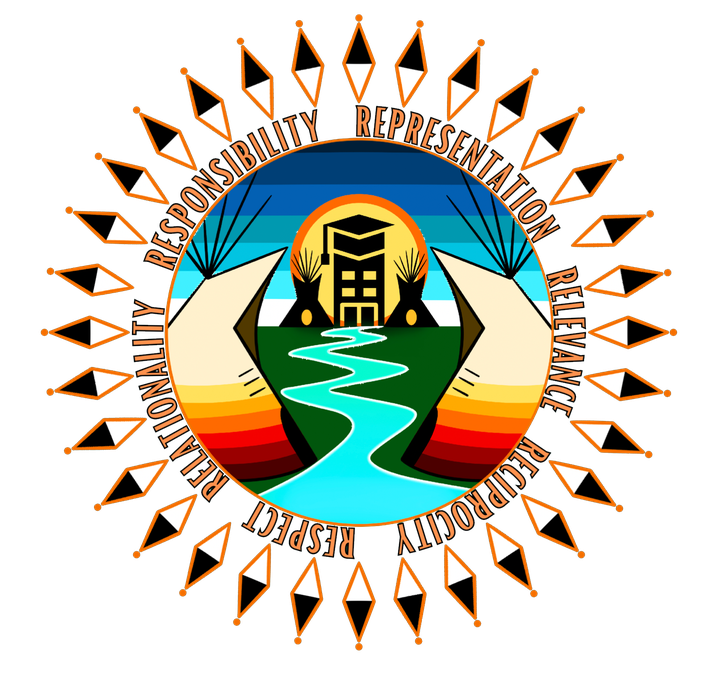
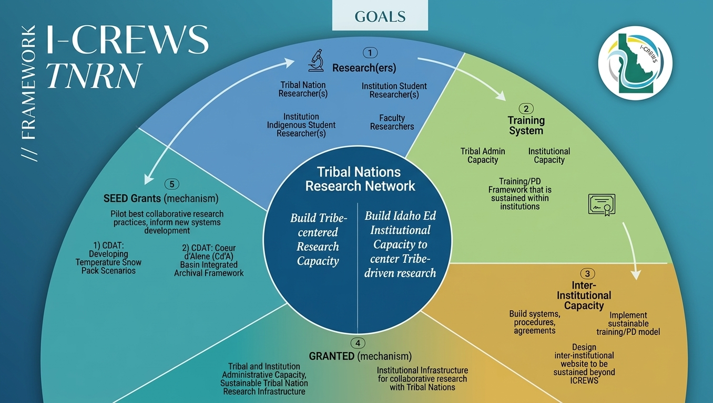
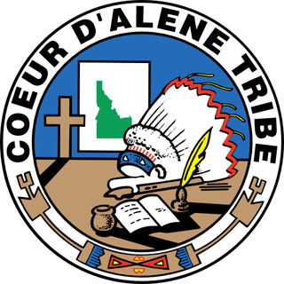
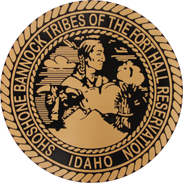

TNRN Digital Hub
Tribal Nations Research Network
Recentering knowledge exchange between Tribes and Idaho universities, in support of Tribes’ sovereignty and self-determination.
Critical to that effort is the inclusion of Indigenous ways of knowing into higher education and research. The network focuses on collaboration between Tribes and universities through the development of research originated by Tribal nations.

Table of Contents
Explore the Digital Hub
Six spaces for Tribes, researchers, students, and institutions to learn, connect, and build research relationships grounded in respect and reciprocity.
-
Indigenous Research & Data Sovereignty
Support for institutions and Tribes in honoring Indigenous rights to govern research and data.
Learn about data sovereignty -
Professional Development
Workshops including the 6 R’s of Indigenous Research series on ethical Native-engaged research.
View learning opportunities -
Tribe-Engaged Research
What true research partnerships look like, and the generational value of relational research.
See research partnerships -
Resource Repository
FAIR/CARE/OCAP resources, data sovereignty agreements, guidance, and curated scholarship.
Browse resources -
Inter-Institutional Research Protocols
Each partner’s frameworks, values, and practices that guide research and data governance.
Find research protocols -
Upcoming Activities
Inter-institutional events, gatherings, and answers to frequently asked questions.
See activities and FAQ
I-CREWS TNRN Framework
Two goals at the center
At the heart of the network are two commitments that guide every activity, supported by researchers, training systems, inter-institutional capacity, and funding mechanisms.
Tribal Nations Research Network
- Build Tribe-centered research capacity
- Build Idaho education institutions’ capacity to center Tribe-driven research

Framework goal areas
-
Researchers
- Tribal nation researchers
- Institution student researchers
- Institution Indigenous student researchers
- Faculty researchers
-
Training System
- Tribal administrative capacity
- Institutional capacity
- A training and professional development framework sustained within institutions
-
Inter-Institutional Capacity
- Build systems, procedures, and agreements
- Implement a sustainable training and PD model
- Design an inter-institutional website to be sustained beyond I-CREWS
-
GRANTED (mechanism)
- Tribal and institution administrative capacity; sustainable Tribal nation research infrastructure
- Institutional infrastructure for collaborative research with Tribal nations
-
SEED Grants (mechanism)
- Pilot best collaborative research practices and inform new systems development
- Coeur d’Alene Tribe (CDAT): Developing Temperature Snow Pack Scenarios
- Coeur d’Alene Tribe (CDAT): Coeur d’Alene Basin Integrated Archival Framework
Featured Series
The 6 R’s of Indigenous Research
A workshop series on ethical Native-engaged research, grounded in six interconnected values.
About the workshop series- Respect
- Relationality
- Responsibility
- Representation
- Relevance
- Reciprocity
Our Network
Partners
Tribal nations and Idaho universities working together to build research relationships that last beyond a grant cycle.

Coeur d’Alene Tribe
Shoshone-Bannock Tribes of Fort Hall- University of Idaho
- Idaho State University
- Boise State University
- Idaho I-CREWS
Research that serves communities for generations
Find your institution’s research protocols, join an upcoming workshop, or explore resources on Indigenous data sovereignty.